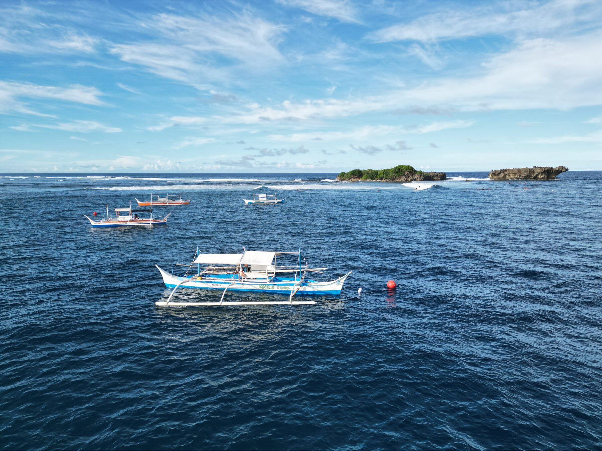
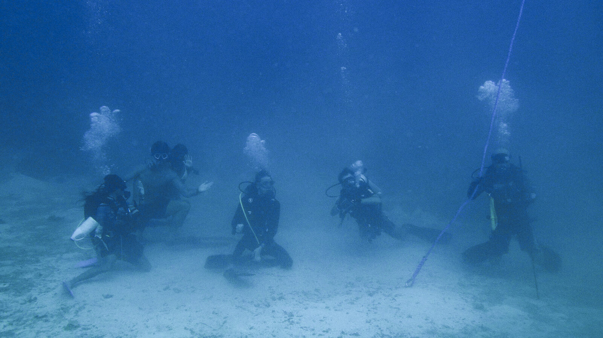
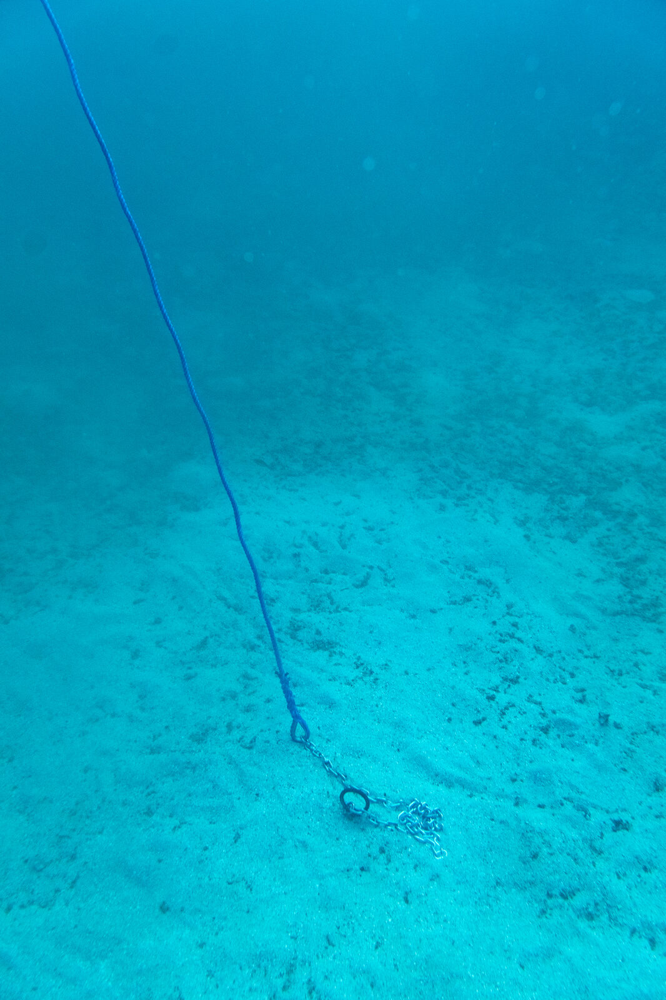
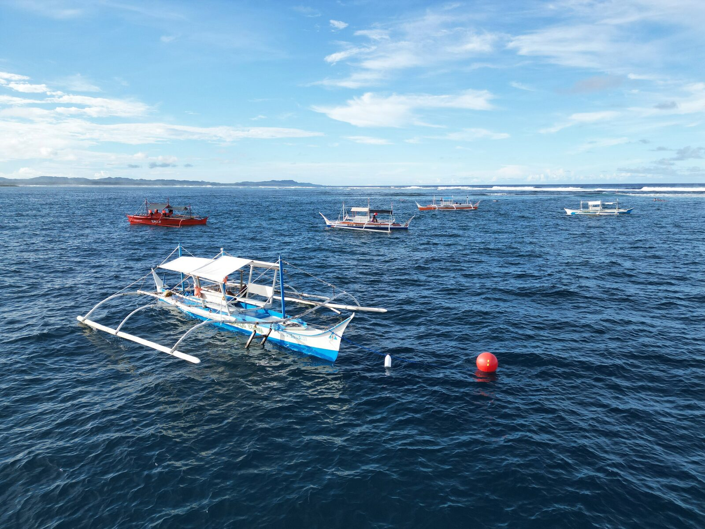
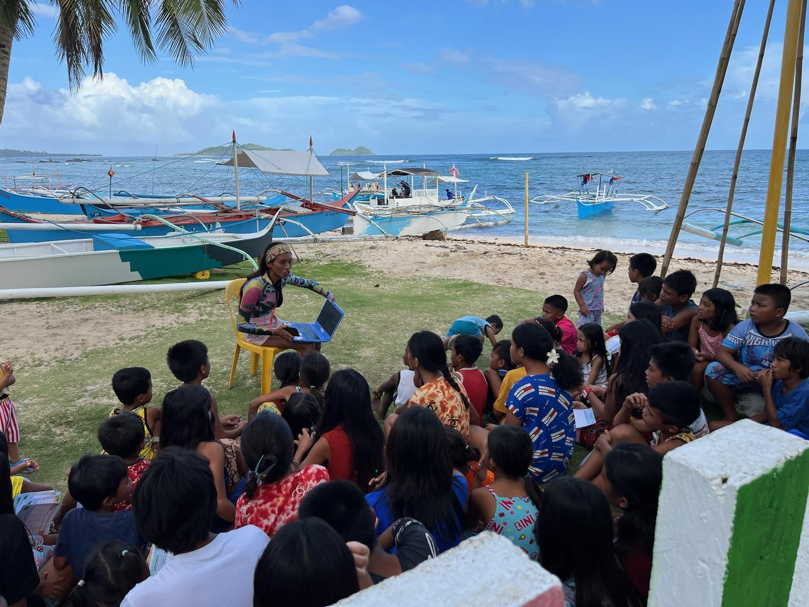
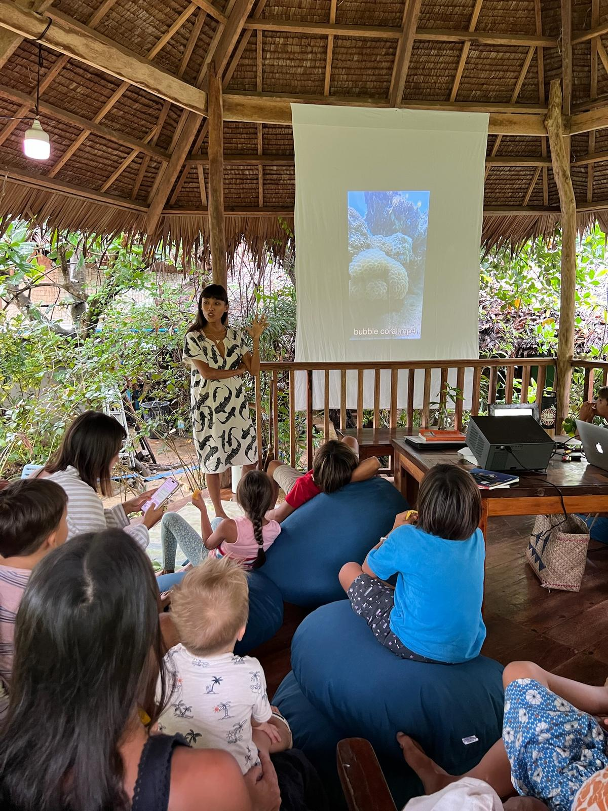
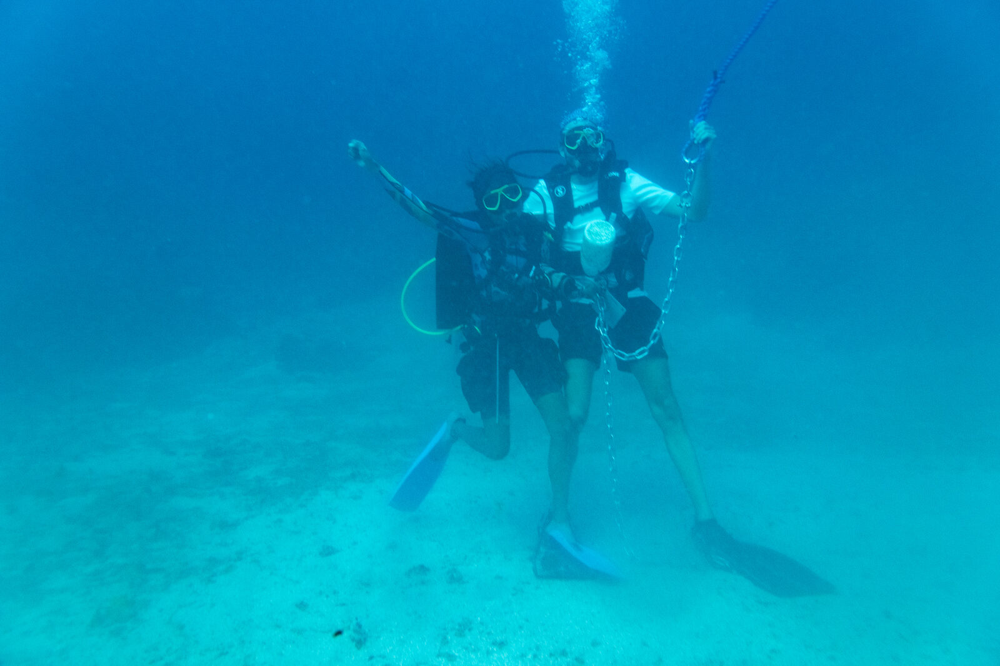

Adopt-A-Mooring-Line
No anchors on the reef.
Every day, boats drop metal anchors directly onto coral. One anchor can destroy decades of coral growth in seconds. We screw ours into the sand.
“The only way to truly protect something is to first fall in love with it.”
Older than our grandparents
Some of the corals at Rock Island and Stimpy's were alive before our grandparents were born. A hard coral grows about a centimeter a year, so a boulder the size of a person has been sitting there for centuries.
We dive these reefs almost every day, and after a while you start to recognize the damage. A fresh white scar across a brain coral. A chunk knocked off a boulder, and a chain dragging back and forth over the same patch every time the tide turns. Once you've seen it, you can't stop seeing it.
Chie wrote her first letter to the local government about it in 2018. Years later, diving the same reefs from her own dive center, she stopped waiting for an answer and started building one.
Nobody here is the villain. The boatmen are working, the surfers are surfing, and most people who drop an anchor have never seen what's underneath. So when Adopt-A-Mooring-Line started in Catangnan in 2025, everyone was at the table: divers, surfers, boatmen, resorts and barangay officials.


How a mooring line works
A helix anchor
A long steel screw drilled deep into a sandy patch, well clear of living coral. It locks in and doesn't move.
A line to the surface
Marine-grade rope, about 1.6 times the depth, with garden hose wrapped around the points where it rubs.
A big red buoy
Boats clip on instead of dropping metal. One line holds two to three surf boats, and the reef below stays untouched.
So far
Adopt a line
When you adopt a line, your name goes on the buoy and floats above the reef you helped protect, for years.
Full line
₱50,000Your name on both sides of the buoy.
Half line
₱25,000Your name on one side of the buoy.
Your amount
Any sizeFunds lines, workshops and outreach. Materials welcome too.
Your sweat
Your timeHelp on install days, at workshops, or with your boat and crew.
You get photos, video and the GPS position of your line. If you're on the island, come dive with us on the day it goes in.
We send local payment details (GCash, UnionBank, Wise) on WhatsApp. Please add the note “Save Corals + your name” so we can thank you. We can't issue official donation receipts.

Beyond the lines
The buoys are what you see from the boat. Most of the work happens on land, with the people who live next to this reef.

Ocean workshops
Beach sessions with local kids about the reef on their doorstep.

Movie nights
Ocean films on the big screen at the dive center. Everyone is welcome.

Installation dives
Guests can join the team on the day a new line goes in.
Built with
We wrote down everything we learned, mistakes included, so the next community doesn't start from zero.
Read the wikiSee you on the boat.
Message us with your dates and what you'd like to do. We're quick on WhatsApp, even in the evening.